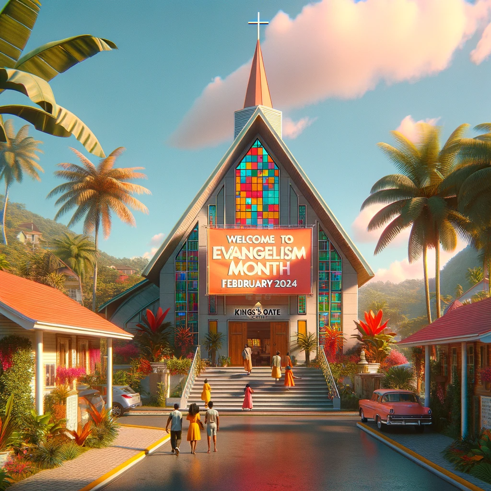

Week 3
Week 3: Youth and Evangelism
Summary Description: Focus on youth involvement in evangelism. This could include discussions on how younger church members can contribute to evangelism efforts and special events for youth.
- Activities: Youth-led service projects, evangelism training tailored for younger members, youth group discussions, and social events.